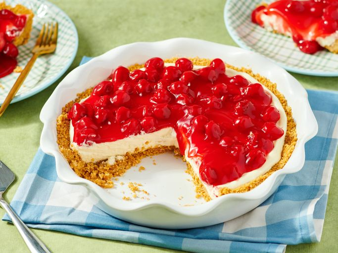
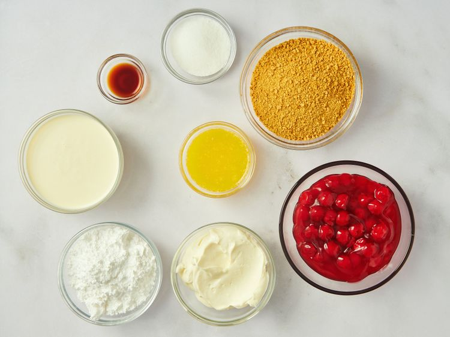
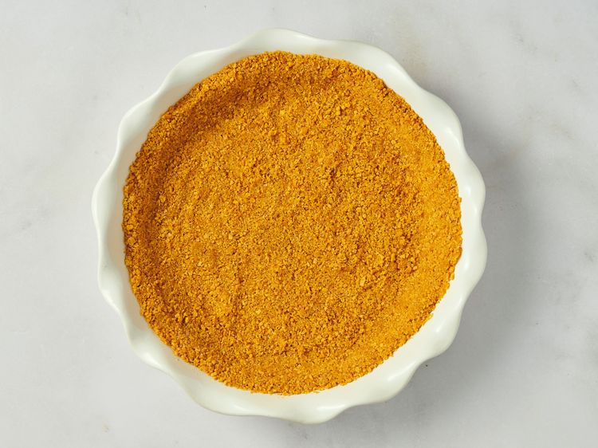
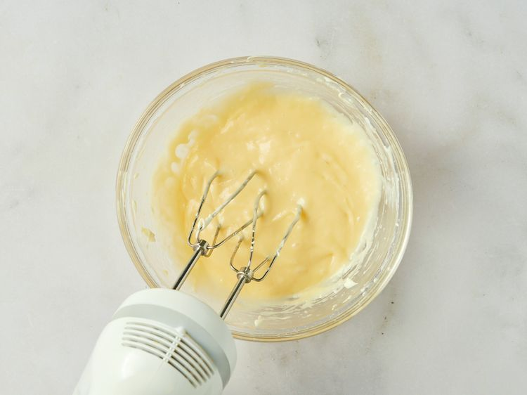
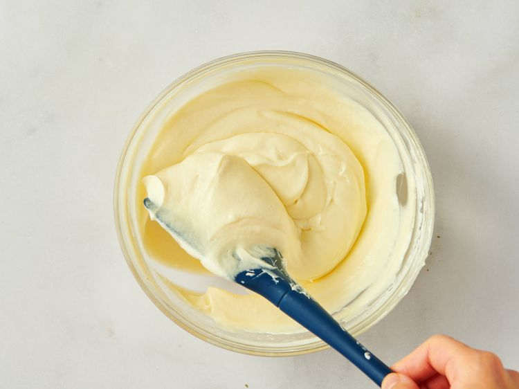
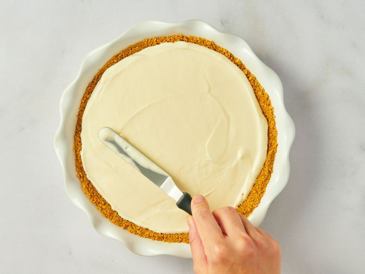
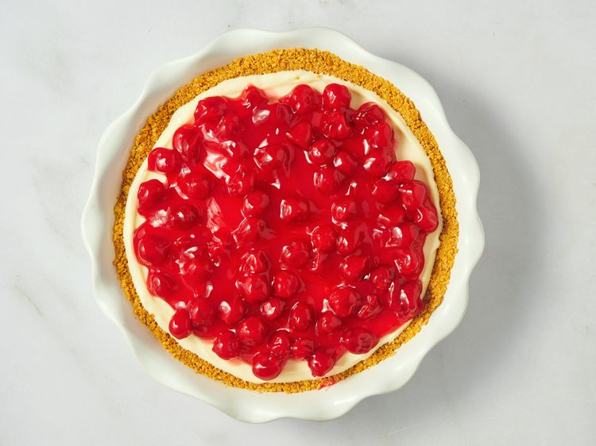

No-Bake Cherry Cheesecake

Prep Time: 20 mins.
Additional Time: 2 hrs.
Total Time: 2 hrs 20 mins.
You'll find the full step-by-step recipe below, but here's what you can expect from this no-bake recipe:
- Make the crust: Mix the graham cracker crumbs with melted butter and sugar. Press the mixture into a pie pan.
- Make the filling: Beat the cream cheese, sugar, and vanilla until smooth. Beat the heavy cream in a chilled bowl until soft peaks form, then combine with the cream cheese mixture. Pour the filling into the crust and chill until set.
- Top and serve the pie: Top the pie with cherry pie filling before serving.
Ingredieents:
Graham Cracker Crust:
- 1 ¼ cups graham cracker crumbs
- ¼ cup unsalted butter, melted
- ¼ cup white sugar
Filling:
- 1 (8 ounce) package cream cheese, softened
- 1 cup powdered sugar
- 1 teaspoon vanilla extract
- 1 cup heavy whipping cream
- 1 (12.5 ounce) can cherry pie filling (or other filling of your choice)
Steps:

- Gather all ingredients.

- To make the crust: Mix graham cracker crumbs, butter, and sugar in a bowl until well incorporated and crumbly. Press mixture into a 9-inch pie plate, going up the sides as much as possible.

- To make the filling: Beat cream cheese, powdered sugar, and vanilla in a bowl with an electric mixer until smooth and spreadable.

- Beat cream in a chilled glass or metal bowl with an electric mixer until soft peaks form. Fold into cream cheese mixture until smooth.

- Pour filling into the prepared crust, and smooth the top with a spatula. Refrigerate until firm, about 2 to 3 hours.

- Spread cherry pie filling over the chilled cheesecake. Serve immediately or refrigerate until serving.
- Enjoy!